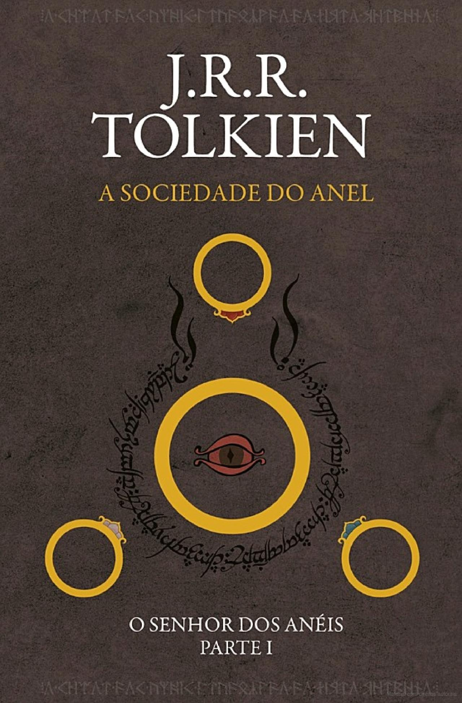

Estante de Livros
Sua biblioteca a um clique de distância.
Jogos Vorazes

KATNISS ESCUTA OS TIROS DE CANHÃO ENQUANTO RASPA O SANGUE DO GAROTO DO DISTRITO 9.
Na abertura dos Jogos Vorazes, a organização não recolhe os corpos dos combatentes caídos e dá tiros de canhão até o final. Cada tiro, um morto. Onze tiros no primeiro dia. Treze jovens restaram, entre eles, Katniss. Para quem os tiros de canhão serão no dia seguinte?...
Após o fim da América do Norte, uma nova nação chamada Panem surge. Formada por doze distritos, é comandada com mão de ferro pela Capital. Uma das formas com que demonstra seu poder sobre o resto do carente país é com Jogos Vorazes, uma competição anual transmitida ao vivo pela televisão, em que um garoto e uma garota de doze a dezoito anos de cada distrito são selecionados e obrigados a lutar até a morte!
Para evitar que sua irmã seja a mais nova vítima do programa, Katniss se oferece para participar em seu lugar. Vinda do empobrecido Distrito 12, ela sabe como sobreviver em um ambiente hostil. Peeta, um garoto que ajudou sua família no passado, também foi selecionado. Caso vença, terá fama e fortuna. Se perder, morre. Mas para ganhar a competição, será preciso muito mais do que habilidade. Até onde Katniss estará disposta a ir para ser vitoriosa nos Jogos Vorazes?
Fonte: Google Books
| Data da primeira publicação |
Autor |
Idioma original |
Gêneros |
| 14 de setembro de 2008 |
Suzanne Collins |
Inglês |
Romance, Ficção científica, Ficção juvenil, Suspense |
O Senhor dos Anéis: A Sociedade do Anel

A Sociedade do Anel O volume inicial de O Senhor dos Anéis, lançado originalmente em julho de 1954, foi o primeiro grande épico de fantasia moderno, conquistando milhões de leitores e se tornando o padrão de referência para todas as outras obras do gênero até hoje. A imaginação prodigiosa de J.R.R. Tolkien e seu conhecimento profundo das antigas mitologias da Europa permitiram que ele criasse um universo tão complexo e convincente quanto o mundo real. A Sociedade do Anel começa no Condado, a região rural do oeste da Terra-média onde vivem os diminutos e pacatos hobbits. Bilbo Bolseiro, um dos raros aventureiros desse povo, cujas peripécias foram contadas em O Hobbit, resolve ir embora do Condado e deixa sua considerável herança nas mãos de seu jovem parente Frodo. O mais importante legado de Bilbo é o anel mágico que costumava usar para se tornar invisível. No entanto, o mago Gandalf, companheiro de aventuras do velho hobbit, revela a Frodo que o objeto é o Um Anel, a raiz do poder demoníaco de Sauron, o Senhor Sombrio, que deseja escravizar todos os povos da Terra-média. A única maneira de eliminar a ameaça de Sauron é destruir o Um Anel nas entranhas da própria montanha de fogo onde foi forjado. A revelação faz com que Frodo e seus companheiros hobbits Sam, Merry e Pippin deixem a segurança do Condado e iniciem uma perigosa jornada rumo ao leste. Ao lado de representantes dos outros Povos Livres que resistem ao Senhor Sombrio, eles formam a Sociedade do Anel. Alguém uma vez disse que o mundo dos leitores de língua inglesa se divide entre os que já leram O Senhor dos Anéis e os que um dia lerão o livro. Com esta nova tradução da obra, o fascínio dessa aventura atemporal ficará ainda mais evidente para os leitores brasileiros, tanto os que já conhecem a saga como os que estão prestes a descobrir seu encanto.
Fonte: Google Books
| Data da primeira publicação |
Autor |
Idioma original |
Gêneros |
| 29 de Julho de 1954 |
J.R.R. Tolkien |
Inglês |
Alta fantasia, Literatura fantástica, Ficção de aventura |
Percy Jackson e o Ladrão de Raios

Primeiro volume da saga Percy Jackson e os olimpianos, O ladrão de raios esteve entre os primeiros lugares na lista das séries mais vendidas do The New York Times. O autor conjuga lendas da mitologia grega com aventuras no século XXI. Nelas, os deuses do Olimpo continuam vivos, ainda se apaixonam por mortais e geram filhos metade deuses, metade humanos, como os heróis da Grécia antiga. Marcados pelo destino, eles dificilmente passam da adolescência. Poucos conseguem descobrir sua identidade. O garoto-problema Percy Jackson é um deles. Tem experiências estranhas em que deuses e monstros mitológicos parecem saltar das páginas dos livros direto para a sua vida. Pior que isso: algumas dessas criaturas estão bastante irritadas. Um artefato precioso foi roubado do Monte Olimpo e Percy é o principal suspeito. Para restaurar a paz, ele e seus amigos – jovens heróis modernos – terão de fazer mais do que capturar o verdadeiro ladrão: precisam elucidar uma traição mais ameaçadora que fúria dos deuses.
Fonte: Google Books
| Data da primeira publicação |
Autor |
Idioma original |
Gêneros |
| 28 de junho de 2005 |
Rick Riordan |
Inglês |
Mitologia grega, Romance, Fantasia, Ficção juvenil, Literatura fantástica, Alta fantasia |
Alice no País das Maravilhas

Na imaginação de Lewis Carroll, um tímido matemático de Oxford, o absurdo também é parte da jornada. Esse conceito é representado com maestria em Alice no País das Maravilhas, uma obra imortal, repleta de criaturas extravagantes e acontecimentos bizarros, mágicos e absolutamente encantadores. Não sem razão, esta narrativa nonsense é caracterizada como uma das histórias mais originais e fascinantes já escritas.
Fonte: Google Books
| Data da primeira publicação |
Autor |
Idioma original |
Gêneros |
| 1865 |
Lewis Caroll |
Inglês |
Ficção, Fantasia, Literatura nonsense |
O Guia do Mochileiro das Galáxias

Considerado um dos maiores clássicos da literatura de ficção científica, O Guia do Mochileiro das Galáxias vem encantando gerações de leitores ao redor do mundo com seu humor afiado.
Este é o primeiro título da famosa série escrita por Douglas Adams, que conta as aventuras espaciais do inglês Arthur Dent e de seu amigo Ford Prefect.
A dupla escapa da destruição da Terra pegando carona numa nave alienígena, graças aos conhecimentos de Prefect, um E.T. que vivia disfarçado de ator desempregado enquanto fazia pesquisa de campo para a nova edição do Guia do Mochileiro das Galáxias, o melhor guia de viagens interplanetário.
Mestre da sátira, Douglas Adams cria personagens inesquecíveis e situações mirabolantes para debochar da burocracia, dos políticos, da "alta cultura" e de diversas instituições atuais. Seu livro, que trata em última instância da busca do sentido da vida, não só diverte como também faz pensar.
Fonte: Google Books
| Data da primeira publicação |
Autor |
Idioma original |
Gêneros |
| 12 de outubro de 1979 |
Douglas Adams |
Inglês |
Ficção científica, Romance, Humor, Ficção científica cômica, Ficção humorística |